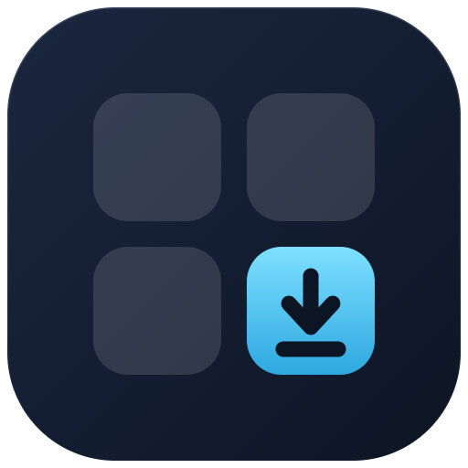

חנות אופלייןחלק מהאפליקציות של Windows מגיעות כקיצור דרך בלבד, ומנסות להוריד את עצמן בפתיחה הראשונה. במחשב מנותק זה נכשל. כאן אורזים אותן במלואן — עם כל ספריות המערכת — לקובץ שמתקין בלי רשת.
[ערכו אותי — משפט פתיחה משלכם, אם תרצו]
הכלי רץ על מחשב שיש בו אינטרנט. התוצאה עוברת בדיסק-און-קי למחשב שאין בו.
מריצים את הכלי על מחשב מחובר, מסמנים מה צריך, והוא מוריד מהשרתים של מיקרוסופט — עם כל התלויות.
נוצרת תיקייה אחת עם מתקין גרפי. מעתיקים אותה כמו שהיא — אין התקנה ואין רישום במערכת.
לחיצה כפולה במחשב היעד. המתקין מזהה מה כבר מותקן, מה יש לו עדכון, ומה דורש Windows חדש יותר.
בכלי יש "סמן הכל". מקבלים תיקייה אחת עם כל האפליקציות ומתקין משולב שמציג רשימת סימון: מה חסר, מה מיושן, ומה לא מתאים לגרסת ה-Windows שבמחשב.
מעבירים בכונן NTFS או exFAT — קובץ מעל 4GB לא נכנס ל-FAT32. גרסת ISO מוכנה: בקרוב.
לחיצה על אפליקציה פותחת את הפרטים שלה; ה-✓ שבפינה מסמן אותה להורדה. בסיום מקבלים קובץ בחירה קטן — הכלי קורא אותו ובונה בדיוק את מה שסימנתם.
אין הגבלת גודל: הכלי בונה תיקייה אחת, לא קובץ ענק אחד. כל אפליקציה יורדת בנפרד מהשרתים של מיקרוסופט.
החבילות יורדות מהשרתים של מיקרוסופט ואינן משונות. אפשר לאמת: לחיצה ימנית ← מאפיינים ← חתימות דיגיטליות.
ההתקנה היא למשתמש הנוכחי. משתמש אחר באותו מחשב יריץ את המתקין בעצמו.
אפשר להתקין גרסה חדשה מעל קיימת, בלי להסיר ובלי לאבד נתונים. המתקין אומר מראש מה יקרה.
גרסת החנות של פנקס הרשימות והצייר דורשת Windows 11. ב-Windows 10 יש ממילא את הגרסאות הקלאסיות במערכת.